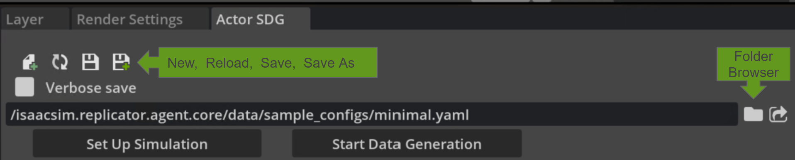
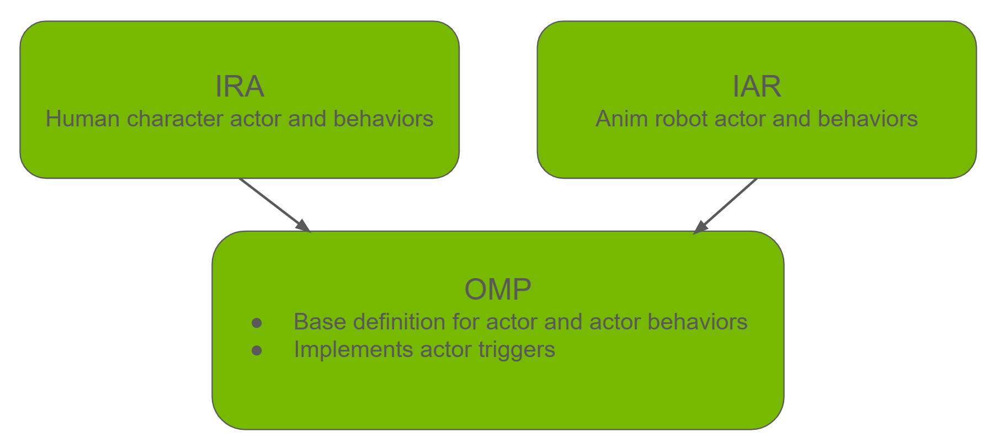
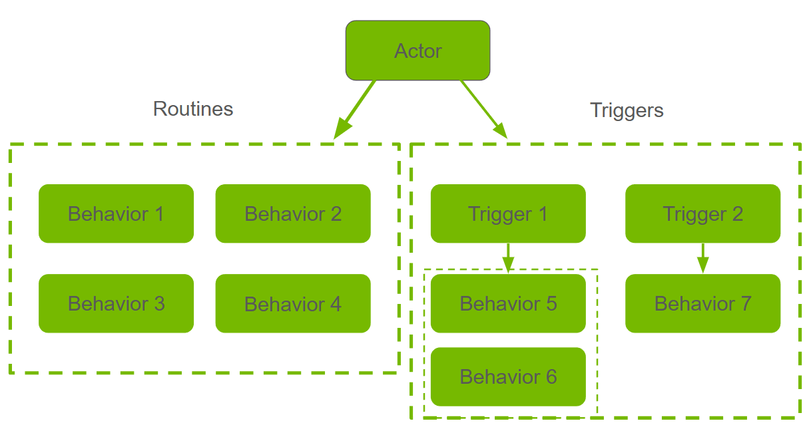
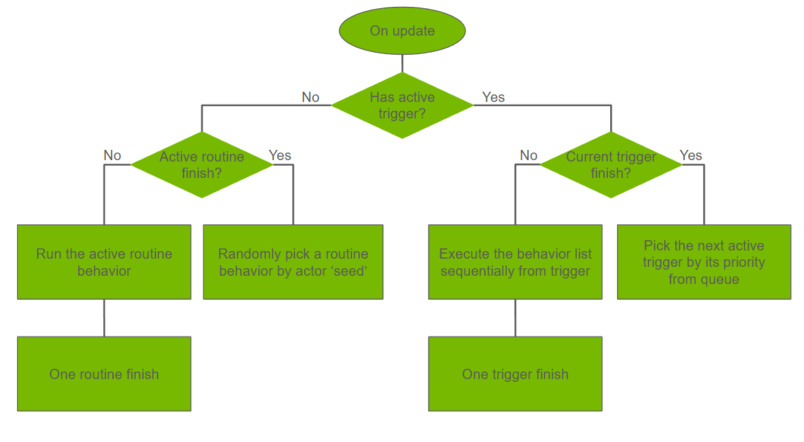

Actor 仿真与合成数据生成#
在零售、制造和物流等行业中，检测并跟踪多样化环境中的动画 Actor 或代理（如人类角色和机器人）具有重大价值。这有助于优化布局、提升安全性并提高效率。然而，收集真实世界数据以训练检测模型通常成本高昂且难以扩展。
合成数据生成提供了一种灵活且可扩展的解决方案。Omni.Metropolis.Pipeline (OMP)、Isaacsim.Replicator.Agent (IRA) 和 Isaacsim.Anim.Robot.Core (IAR) 扩展共同提供了一种在 3D 环境中设置人物角色和机器人并生成合成数据的方法。
该框架还通过配置文件提供对 Actor 行为、环境和传感器的控制。其旨在为训练计算机视觉模型和测试软件在环系统提供 GPU 加速解决方案。
该框架通过以下功能简化了仿真定制：
无代码交互：配置通过 YAML 文件表达。无需编写代码即可获取合成数据。
简化设置：集成于 Isaac Sim 中，提供 GUI 和脚本接口，支持交互式和无头（headless）工作流。
高保真数据：利用 Omniverse 的 SimReady 资产、物理引擎和渲染技术，生成用于 AI 训练所必需的逼真图像和准确标注。
无缝集成：作为 Kit 扩展的一部分，它与
omni.anim.behavior、omni.anim.navigation和omni.replicator.core原生兼容。
在启用此扩展之前，请阅读 什么是 Isaac Sim？ 以了解 Isaac Sim，并按照 安装 指南安装 Isaac Sim。

启用扩展#
请按照 Omniverse 扩展管理器指南 启用
Omni.Metropolis.Pipeline、Isaacsim.Anim.Robot.Core和Isaacsim.Replicator.Agent.Core & UI。这些扩展在启动时会从 Isaac Sim Assets 获取示例资产。如果遇到资产加载问题，请参阅 Isaac Sim Assets。
如果 UI 加载似乎卡住，请尝试使用
--/persistent/isaac/asset_root/timeout=1.0标志启动 Isaac Sim。
可以通过 Tools > Action and Event Data Generation > Actor SDG 访问 UI 面板，该面板会在屏幕右侧打开。
注意
若要在启动时自动加载此扩展，请在扩展管理器中勾选 autoload 复选框。
由于扩展依赖关系，可能需要重启 Isaac Sim 应用程序。
提示
如果遇到意外错误，请尝试使用 --reset-user 标志启动 Isaac Sim，以清除之前的用户设置。
./isaac-sim.sh --reset-user
在 UI 中入门#
对于首次使用的用户，请从 UI 开始。如需在 Isaac Sim 无头模式下通过 Python 脚本运行，请参阅 Running from script 部分。
请按照 Enable Extensions 部分的说明操作，并打开 UI 面板。
默认加载最小配置。您也可以通过文件夹浏览图标加载单独的配置文件。
所有示例配置文件均位于
[Isaac Sim App Path]/extscache/isaacsim.replicator.agent.core-[current-version]/data/sample_configs/中。有关每个文件的说明，请参阅 Sample Configs。最小配置文件不包含 actors 或 cameras。如需更全面的示例，请使用上述文件夹中的
full_pipeline.yaml。此示例可能需要更长的加载时间。


[可选] 根据您的需要修改配置文件。
使用 New 图标创建新的配置文件。
使用 Reload 图标重置 UI 中的更改并重新加载原始配置文件。
使用 Save 或 Save As 图标将 UI 中的更改保存到配置文件。
使用 Verbose save 复选框来控制保存配置文件时写入的详细程度。关闭时，写入的文件保持紧凑，仅写入已修改的值。开启时，将包含所有非空字段，如果您需要每个可用选项的完整参考，或需要与他人共享完全显式的配置，这非常有用。
点击 UI 顶部的 Set Up Simulation 按钮。它将根据配置开始加载模拟资产（场景、相机、角色）。
场景需要 NavMesh 才能正确生成和控制资产。示例配置中的场景已预先设置好 NavMesh。如果您使用外部场景，请参考 Navigation Mesh 进行 NavMesh 设置。
您还可以前往 Window > Navigation > NavMesh，并在 NavMesh 设置中关闭 Auto-Bake。关闭该选项可以提高性能。
注意
点击 Set Up Simulation 始终会根据当前配置完全重新加载场景。这包括重新打开基础环境 USD，并从头重新创建所有角色（人物和机器人）、传感器和道具层。此操作会丢弃在之前的设置之后对舞台进行的所有手动编辑。如果您想迭代配置，请先在 UI 或配置文件中做出更改，然后点击 Set Up Simulation 以应用这些更改。
点击 UI 顶部的 Start Data Generation 按钮。模拟和数据生成将在 Actor SDG Setup 面板中 Simulation Duration 字段指定的持续时间（以秒为单位）内运行。
数据生成完成后，输出数据将位于 Replicator 面板中指定的 Output Directory。
默认情况下，在 Windows 上为
%USERPROFILE%\IRA_output，在 Linux 上为~/IRA_output。有关文件夹布局、预期文件名以及确认运行成功的检查清单，请参阅 Expected Output。
通过脚本运行#
对于大规模数据生成，从脚本启动效率更高。IRA 提供了一个自动脚本（actor_sdg.py）来运行离线数据生成。
要通过脚本运行，请打开安装 Isaac Sim 所在目录的终端，并运行以下命令：
- 对于 Linux：
./python.sh tools/actor_sdg/actor_sdg.py -c [config file path]
- 对于 Windows：
.\python.bat tools\actor_sdg\actor_sdg.py -c [config file path]
注意
[config file path]是 IRA 配置文件的路径。您必须使用随 Isaac Sim 捆绑的
python.sh或python.bat来运行脚本。/tools/actor_sdg文件夹中也提供了一个示例配置文件。对于 Linux 示例运行，请执行：./python.sh tools/actor_sdg/actor_sdg.py -c tools/actor_sdg/sample_config.yaml
预期输出#
数据生成完成后，IRA 会将仿真输出写入配置中 replicator 块内由 output_dir 指定的目录。如果未设置 output_dir，则默认位置为：
Linux：
~/IRA_outputWindows：
%USERPROFILE%\IRA_output
具体布局取决于当前激活的写入器（有关完整的参数列表，请参阅 Writer Configuration）。使用默认的 IRABasicWriter 和捆绑的 full_pipeline.yaml 示例配置时，您应该会看到类似以下结构的输出：
<output_dir>/
├── <render_product_or_camera_subfolder>/
│ ├── rgb/ # one file per captured frame
│ │ ├── rgb_0030.png
│ │ ├── rgb_0031.png
│ │ └── ...
│ ├── camera_params/ # camera intrinsics and pose per frame
│ │ ├── camera_params_0030.json
│ │ └── ...
│ ├── object_detection.json # consolidated bounding boxes, skeleton data,
│ │ # and per-actor action data.
│ └── ... # one folder per additional annotator that
│ # was enabled (semantic_segmentation,
│ # instance_segmentation, distance_to_camera,
│ # normals, motion_vectors, ...)
└── ...
API 用法#
此扩展还提供了一个 Python API，您可以使用它在自己的脚本中设置仿真并生成数据。
请确保已启用 isaacsim.replicator.agent.core，并按照以下示例使用 API。
注意
以下代码片段使用了扩展捆绑的最小配置（data/sample_configs/minimal.yaml）。
import os
from isaacsim import SimulationApp
# Start the application
simulation_app = SimulationApp({"headless": True})
# Get the utility to enable extensions
from isaacsim.core.utils.extensions import enable_extension
# Enable the IRA extension
enable_extension("isaacsim.replicator.agent.core")
simulation_app.update()
def _get_config_path() -> str:
"""Return path to the minimal IRA config bundled with the extension."""
import omni.kit.app
core_ext_path = (
omni.kit.app.get_app().get_extension_manager().get_extension_path_by_module("isaacsim.replicator.agent.core")
)
default_config_file_path = os.path.join(core_ext_path, "data", "sample_configs", "minimal.yaml")
if not os.path.isfile(default_config_file_path):
raise FileNotFoundError(f"IRA config not found: {default_config_file_path}")
return default_config_file_path
async def run_ira_data_generation(setup_simulation: bool = False, run_data_generation: bool = False):
from isaacsim.replicator.agent.core import api as IRA
# IRA: load config. Specify the config file path.
config_path = _get_config_path()
result = IRA.load_config_file(config_path)
if not result:
raise RuntimeError(f"Failed to load IRA config: {config_path}")
# IRA: get config, you can modify the config here
config = IRA.get_config_file()
IRA.set_config(config)
# IRA: setup simulation (only when setup_simulation is True)
if setup_simulation:
await IRA.setup_simulation()
# Allow a few frames for scene to settle
import omni.kit.app
app = omni.kit.app.get_app()
for _ in range(10):
await app.next_update_async()
# IRA: generate data (only when run_data_generation is True)
if run_data_generation:
await IRA.start_data_generation_async(will_wait_until_complete=True)
simulation_app.run_coroutine(run_ira_data_generation(setup_simulation=False, run_data_generation=False))
simulation_app.close()
配置文件#
配置文件是定义仿真的核心位置。它控制从环境和角色到传感器和数据输出的所有内容。该文件使用 YAML 格式。
配置文件组织为以下顶级部分：
environment：定义仿真环境和资产。character：配置人类角色。robot：配置机器人。sensor：配置 RTX 传感器。replicator：配置数据生成和输出。
有关详细的配置说明、参数列表和示例，请参阅以下文档：
示例配置#
该扩展在 [ext-path]/data/sample_configs/ 下捆绑了一组小型的即用型 YAML 配置，以便您在组合自己的配置之前，能够独立审查每个主要功能。这些示例并排涵盖了两种角色行为 API：
位于顶层的稳定例程触发系统
位于
behavior_tree/下的实验性行为树系统
如果您是初学者，请打开 minimal.yaml（UI 在启动时会加载它）以审查最小的有效配置，然后切换到 full_pipeline.yaml 以查看包含传感器放置和写入器的端到端演示。
从 IRA 0.x.x 迁移#
如果您从 IRA 0.x.x（随 Isaac Sim 5.1 及更早版本发布）升级，请注意 IRA 1.x.x（Isaac Sim 6.0+）是一次完整的架构重新设计。所有核心功能，如下所示，均得以保留：
环境加载
角色和机器人生成
传感器放置
合成数据生成
但是，配置架构、行为系统和 Python API 均已更改。现有的 0.x 配置文件和脚本如果不进行修改将无法工作。
重新设计的主要原因：
更简单的工作流 – 生成、保存和加载外部命令文件的多步骤流程已取消。行为现在直接在 YAML 配置中内联定义，将设置过程简化为 UI 中的两次点击。
更高的灵活性 – 命名组允许您在单个配置中定义具有独立设置的多个角色、机器人和传感器群体。多个数据写入器可以并发运行，并支持每个写入器的独立计时和传感器选择。
更强大的验证 – Pydantic v2 模型在加载时验证配置并显示清晰的错误消息，从而在仿真开始前捕获错误。
原生 USD 架构 – Actor 配置以 USD schema 和 prim 的形式持久化存储，使其可以直接在 stage 中进行检查和编辑。
有关涵盖所有破坏性变更的完整迁移指南，包括变更前/后示例和分步检查清单，请参阅 Replicator Agent (IRA)。
Actor 行为#
Actor 行为由 OMP、IRA 和 IAR 共同实现。


Actor 在播放时执行“例程-触发器”行为循环。此模式可通过分配给 Actor 的行为和触发器进行配置。


例程触发器循环#
当没有 Actor 触发器被激活时，Actor 使用 actor global seed，根据概率权重从例程中反复选择要执行的行为，从而执行例程循环。
当任何触发器激活时，Actor 暂停其例程并执行每个活动触发器下的行为。如果更高优先级的触发器触发，系统会暂停并排队正在运行的触发器（较低优先级的触发器将被跳过）。 当触发器的所有行为完成时，该触发器被标记为完成。然后队列中的第一个触发器恢复执行。 在所有活动触发器完成后，Actor 返回其例程。


配置行为#
在从配置文件将 Actor 加载到场景中后，配置信息会嵌入到 USD API schema 和 USD Prim 中。每个 Actor 由一个 MetroAgentAPI schema 及其派生类型表示。
对于人类角色，它是附加在 SkelRoot prim 上的 IRACharacterAPI。对于动画机器人，它是附加在机器人 payload 根 prim 上的 AnimRobotAPI。
每个行为和触发器都成为一个独立的 USD Prim，Actor USD API 可以引用这些 Prim，每个 Actor 触发器 Prim 也可以引用一个行为列表。
角色 USD API 架构定义了角色的基本信息：
名称
组
种子
一个例程引用槽和一个触发器引用槽
在运行时，name、group 和 seed 将被组合并哈希为一个单一的 seed，即 actor global seed。此 seed 将用于 Actor 的所有“随机性”，包括为 Actor 本身随机选择 routine，以及在每个行为内部进行随机选择（例如从速度范围中选择一个速度）。
这也意味着，如果其他设置和环境不变，相同的 actor global seed 将显示相同的结果。
每种类型的角色行为由一个 USD Prim 类型表示。它定义了行为的配置：
权重
重复
行为
对于人类角色，行为 Prim 类型遵循 CharacterXXXBehavior 命名模式。对于动画机器人，它们是 RobotXXXBehavior。
每个 actor 触发器也是一个 USD Prim。它定义了触发器优先级，并包含一个对行为列表的引用，当该触发器激活时，将按顺序执行该列表。
人类角色和动画机器人共享在 OMP 中定义的相同触发器类型，其命名模式为 MetroXXXTrigger。
此外，角色利用 omni.behavior.behavior（人类角色）和 isaacsim.anim.robot.core（动画机器人）作为其动画实现。
有关它们的详细信息，请参阅以下文档：
行为树（实验性）#
警告
行为树角色支持是实验性的，可能会在未来的版本中发生变化。
除了上述常规触发器行为系统外，IRA 1.3.0 引入了通过行为树驱动角色行为的支持。行为树使用 omni.behavior.tree.core 和 omni.anim.behavior.tree 扩展进行编写。
行为树概述
行为树是一种用于决策的分层模型。它由协同工作的不同节点类型组成：
Action nodes 是角色执行具体操作的叶子级节点（例如，
MoveTo、Wait）。Composite nodes 控制逻辑和执行流程。例如，
Sequence节点按顺序运行其子节点，而Selector节点尝试子节点直到其中一个成功。Modifiers and Decorators 包装其他节点以改变其行为，例如
Repeat（循环子树）或RandomNavMeshPoint（提供随机目标点）。
通过组合这些节点类型，您可以构建任意复杂的行为。从简单的漫游循环到多步条件序列，所有行为都定义在单个行为树中，无需编写代码。与按权重随机选择行为的 IRA 例程系统相比，行为树提供了对执行顺序、分支和循环的完全确定性控制。
与例程和触发器的关系
注意
行为树角色组目前不支持触发器。任何响应式或条件逻辑都必须作为节点在行为树内部进行编写。
行为树模式是例程-触发器系统的替代方案。配置中的每个角色组使用二者之一：一个组要么定义 routines 和 triggers（IRA 风格），要么引用 behavior_tree。但是，单个配置文件可以包含多个组，因此 IRA 风格和行为树组可以并存。
工作流程
使用
omni.behavior.tree.ui编写行为树并将其保存为 JSON 文件。该树引用节点库omni.behavior.tree.core和omni.anim.behavior.tree以获取其动作、组合和修饰节点。有关如何编写行为树，请参阅 Behavior Tree 用户指南。在 IRA 配置 YAML 中，创建一个角色组，并使用
behavior_tree字段指向 JSON 文件。可选地，提供overrides字段，以便在不修改树文件的情况下为不同的角色组分配节点参数。警告
overrides字段目前无法通过 UI 进行配置。只能直接在 YAML 配置文件或 API 中对其进行编辑。照常运行仿真。行为树角色与 IRA 角色共享相同的生成、NavMesh 和数据生成流程。
在 [Isaac Sim Assets Path]/Samples/BehaviorTree 文件夹中提供了包含行为树角色组的示例配置文件，这些文件也捆绑在 isaacsim.replicator.agent.core 扩展的 data/sample_configs/behavior_tree/ 文件夹中（请参阅 示例配置）。有关配置详细信息、参数参考和 YAML 示例，请参阅配置文件指南中的 行为树角色组（实验性）。
警告
由 IRA 设置的行为树角色仍然应用了 IRACharacterAPI 架构，但这仅用于数据生成标识（名称、组、语义标签及相关字段）。角色的行为完全由行为树通过 omni.behavior.tree.core (OBT) 控制。IRA 级别的设置（如 seed）对行为树角色没有影响。
其他示例和参考#
若要通过 UI 或代码编辑配置文件，请参阅 Configuration Editor API：
如需了解使用 CustomWriter 从 IRA 摄像头流式传输 RTSP 视频的实用指南，请查阅以下示例：
如需了解如何向视口和流式输出添加视觉噪声及图像退化效果（如突然的低光照、白平衡偏移、闪烁、传感器噪声），请查阅以下示例：
术语#
Isaacsim.Replicator.Agent.Core
管理仿真状态的核心扩展。它包含用于设置仿真和捕获合成数据的基本 API 和模块。其模块可独立调用。
Isaacsim.Replicator.Agent.UI
IRA 的 UI 扩展。加载此扩展时，核心扩展会自动加载。此扩展包含用于便捷交互的 UI 组件。
Configuration File
包含配置数据的 .yaml 文件，用于定义仿真的关键组件，包括随机化种子、仿真持续时间、参与者数量以及输出格式。要使用此扩展，您必须先加载配置文件或使用 UI 生成 YAML 文件。
Actor
参与者由各自的控制器（omni.behavior.tree 和 isaacsim.anim.robot）控制，并在仿真中执行动作。此扩展支持人类角色和机器人（Nova Carter、iw.hub）作为参与者。在本文档中，“actor”和“agent”这两个术语可互换使用。
Seed
随机化种子。给定相同的种子，该扩展可以为相机和智能体位置以及智能体行为生成相同的随机化结果。在种子相同且操作序列相同的情况下，保证生成相同的数据。
Replicator (Omni.Replicator.Core)
此扩展所基于的数据捕获扩展。有关 Replicator 扩展的更多信息，请参阅 Replicator 官方文档。
Behavior Tree
一种用于组织决策和动作的分层数据模型。行为树定义为 JSON 文件，并在 IRA 配置中引用。它为控制角色行为提供了例程触发系统的替代方案。有关更多信息，请参阅 Behavior Tree 文档。